«Касса Розница» Windows/Linux
Сокращения¶
ФН – Фискальный Накопитель
ККТ – Контрольно-Кассовая Техника
ККМ – Контрольно-Кассовая Машина
ОФД – Оператор Фискальных Данных
ЦТО – Центр Технического Обслуживания
ФНС – Федеральная Налоговая Служба
POS-терминал — платёжный терминал, (Point of Sale — точка продажи)
Введение¶
Документ рассчитан на пользователей приложения Касса Розница для Windows/Linux и описывает процедуру оформления фискальных документов (чеков).
Запуск приложения¶
- Убедитесь, что приложение установлено, учётная запись создана, а кассовый аппарат и платёжный терминал подключены.
- При входе в приложение выберите учётную запись и введите код доступа.
- Выберите организацию и торговый объект. Если в приложении задана одна организация или один торговый объект, то приложение выберет их автоматически.
Произойдёт переход на экран рабочего места кассира (далее — РМК).
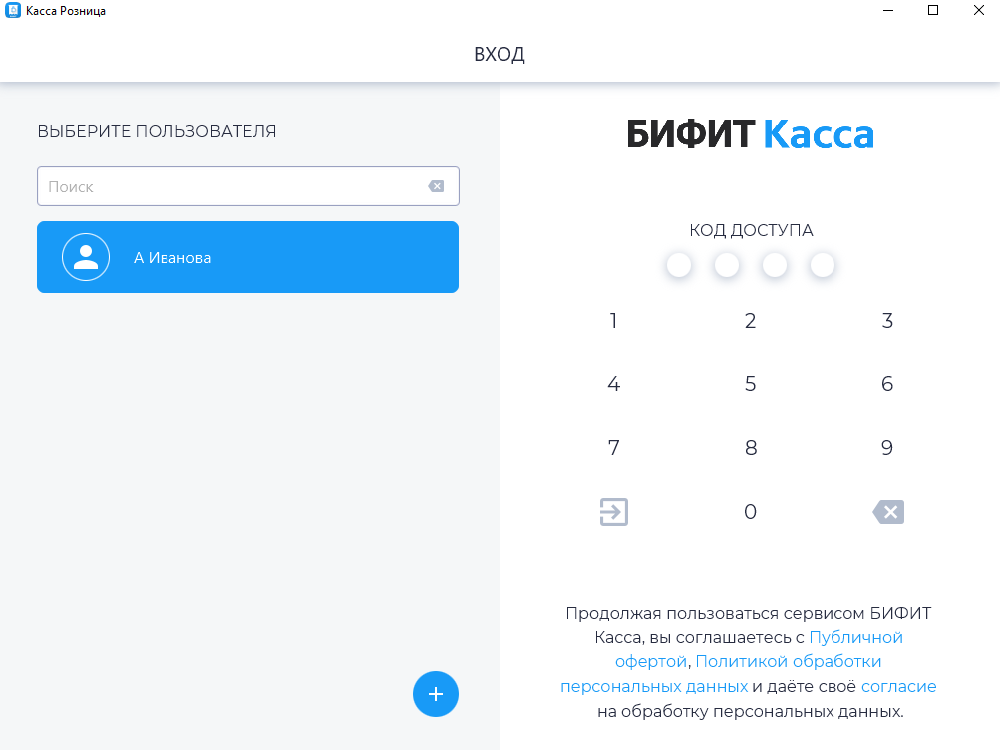
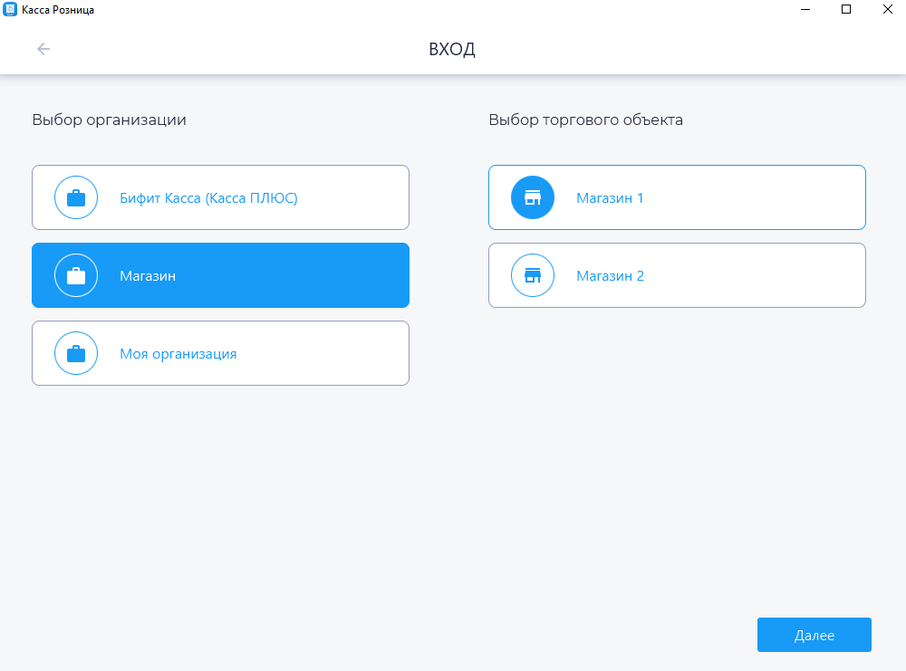
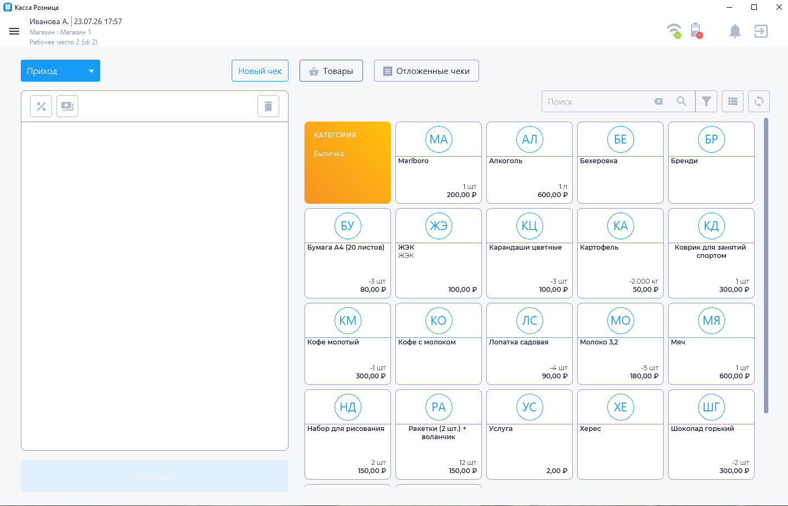
Важно!
Учётную запись сотрудника создаёт руководитель организации или другой пользователь с правами администратора в личном кабинете БИФИТ Касса.
Экран РМК¶
На экране РМК происходит оформление покупок:
- оформление товаров и услуг;
- редактирование позиций в чеке;
- назначение скидок.
Для оформления фискальных документов нажмите на значок меню в верхнем левом углу  и выберите раздел Касса.
и выберите раздел Касса.
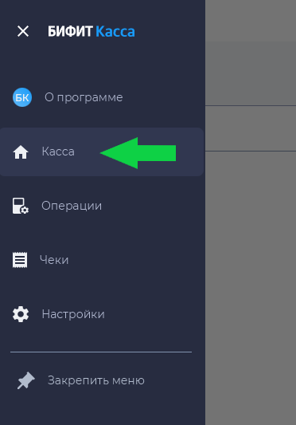
Откроется экран оформления чека Приход.
Изменить кассовую операцию можно в меню в верхнем левом углу.
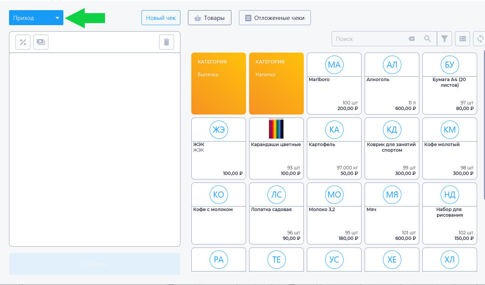
Доступны следующие операции:
- Приход;
- Возврат прихода;
- Расход;
- Возврат расхода;
- Коррекция прихода;
- Коррекция возврата прихода;
- Коррекция расхода;
- Коррекция возврата расхода.
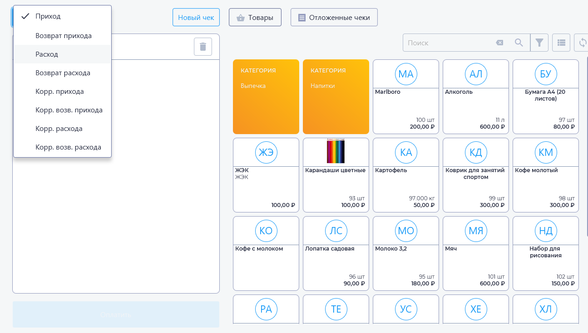
На экране РМК доступны следующие действия:
- ввод товара с указанием наименования, цены и НДС: Свободная цена;
- подбор товаров из справочника;
- переключение вида справочника товаров;
- принудительная синхронизация справочника товаров;
- поиск товара по наименованию.
Дополнительно:
- – добавление скидки. Доступна только процентная скидка. После добавления скидка распределяется по всем позициям в чеке.
- – удаление чека.
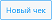
– создание нового чека. Если у вас уже был открыт чек, он также будет доступен для дальнейшей работы.
Для перехода к оплате нажмите Оплатить.
Режимы отображения справочника товаров¶
Режим отображения справочника можно менять. Например, выбрать режим плитки или списка.
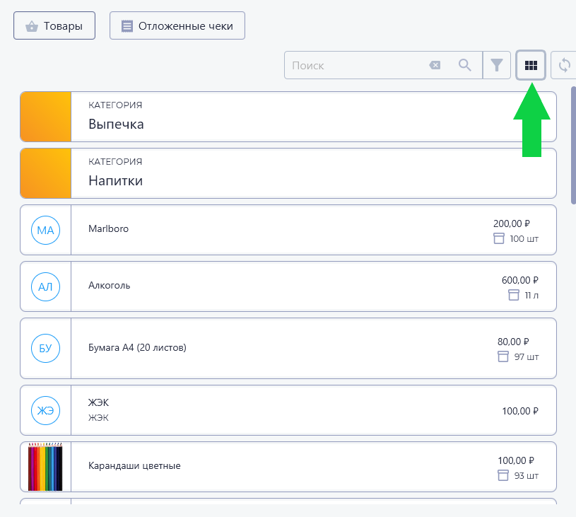
Добавление товара в чек сканером штрихкода¶
Чтобы добавить товар в чек сканером штрихкода, убедитесь, что нужному товару присвоен штрихкод. Перейдите на экран РМК и отсканируйте штрихкод на товаре.
Для подключения сканера штрихкода в приложении не требуется выполнять специальных настроек. Убедитесь, что сканер работает по USB или Bluetooth в режиме эмуляции клавиатуры. Эту информацию можно уточнить у продавца оборудования. Подключите сканер к USB-разъёму или создайте пару при Bluetooth-соединении.
Добавление в чек товара из справочника¶
Справочник с товарами размещается в правой части экрана РМК. Нажмите на товарную позицию, чтобы добавить её в чек.
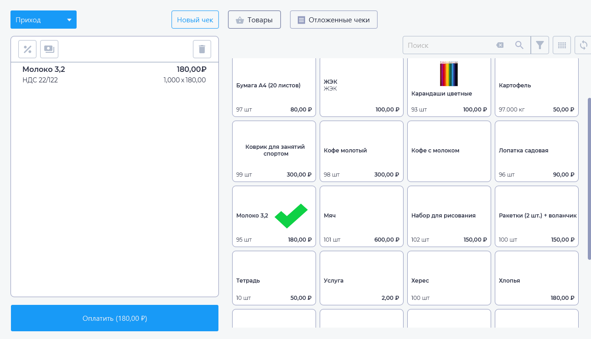
Добавление в чек товара по свободной цене¶
Опция добавления в чек товара по свободной цене находится в верхней левой части экрана РМК.
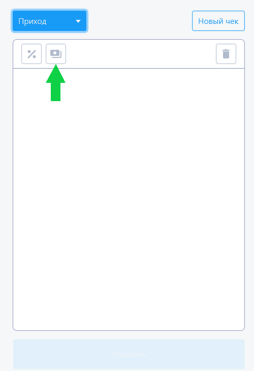
В открывшемся окне введите цену товара. Обратите внимание, что поля:
- наименование;
- количество;
- способ оплаты;
- предмет расчёта;
- НДС
уже заполнены. При необходимости их можно изменить.
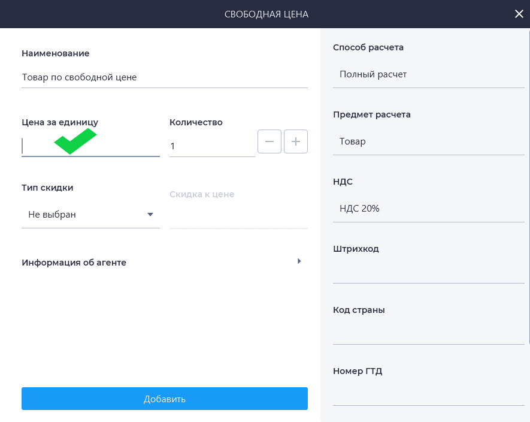
При продаже по свободной цене значения Наименование позиции, Предмет расчёта, Тип НДС можно задать по умолчанию.
Это можно сделать в меню Настройки, раздел Дополнительно, пункт Продажа по свободной цене.
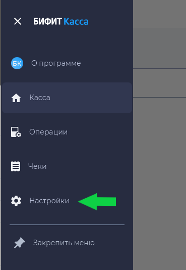
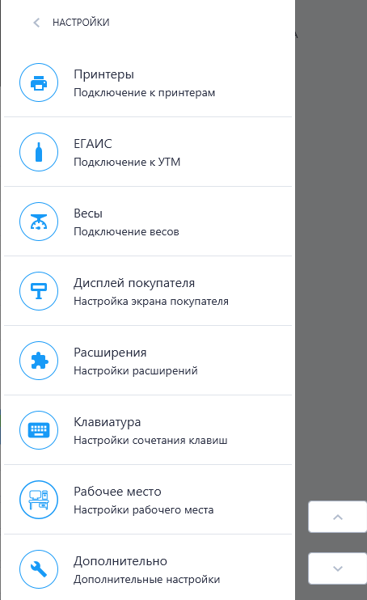
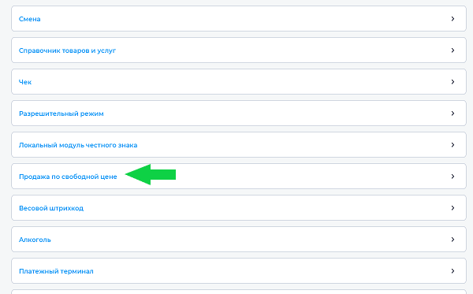
Добавление в чек весового товара¶
Весовой товар — продукция, измеряемая дробными величинами, например, килограммами, граммами, литрами.
Для добавления в чек весового товара необходимо передать в приложение точное количество товара, например 0,532 кг.
Добавление в чек весового товара вручную¶
Добавление весового товара вручную означает, что у кассира есть возможность измерить вес товара, например, на электронных весах, присутствующих на рабочем месте кассира, но не подключенных к ЭВМ.
Для добавления в чек весового товара на экране Приход нажмите Добавить товар, перейдите в справочник, выберите весовой товар и в пункте Количество введите точное количество граммов или килограммов.
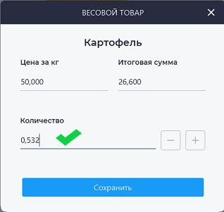
Добавление в чек весового товара электронными весами¶
Для автоматизации рабочего места кассира приложение позволяет подключить электронные весы с возможностью передачи данных.
Положите товар на весы и выберите весовой товар. Поле Количество заполнится автоматически. При изменении веса нажмите кнопку Взвесить.
Продажа маркированной продукции¶
- При выбытии алкогольной продукции необходимо отсканировать Data Matrix на акцизной марке.
- Возникнет окно валидации маркировки. Если результат проверки отрицательный, исключите заблокированные к продаже товары и продолжайте оформление чека.
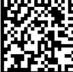
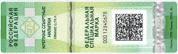


Добавление в чек товара 18+¶
- Добавьте товар в чек. Появится окно подтверждения возраста с помощью Цифрового ID через приложение MAX.
- Отсканируйте данные на устройстве покупателя сканером на кассе.
- В случае ошибки нажмите Повторить попытку.
- Если приложение MAX покупателя не работает или у покупателя нет Цифрового ID, выберите опцию Подтвердить без МАХ. Откроется окно подтверждения возраста.
- Проверьте дату рождения покупателя в паспорте или другом удостоверяющем личность документе.
- Если покупателю исполнилось 18 лет, в окне подтверждения нажмите Да, есть 18. Во всплывающем окне «Возраст подтверждён» нажмите Закрыть.
- Если покупателю не исполнилось 18 лет или нет возможности подтвердить возраст, нажмите Нет, удалить товар. Во всплывающем окне «Товар удалён» нажмите Закрыть.
- Продолжите добавление в чек других товаров.


Приём платежей в качестве агента¶
Агентский платёж — приём денег за услуги или товар в пользу третьих лиц, например, при оплате ЖКХ или сотовой связи.
Для продажи агентских услуг пользователь с правами администратора должен предварительно создать услугу агентского платежа в Личном Кабинете БИФИТ Касса.
После внесения агентского платежа в справочник товаров необходимо перезагрузить приложение для обновления справочника.
Агентский платёж вносится в чек так же, как обычный товар.
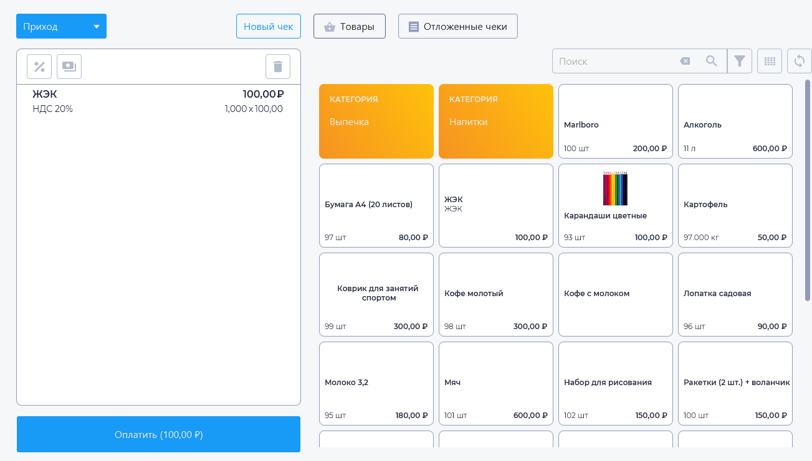
Редактирование позиций в чеке¶
После добавления позиции в чек её можно отредактировать или удалить из чека.
Нажмите на товар в чеке. Откроется карточка товара.
В верхней левой части экрана доступны опции Удалить или Копировать позицию.
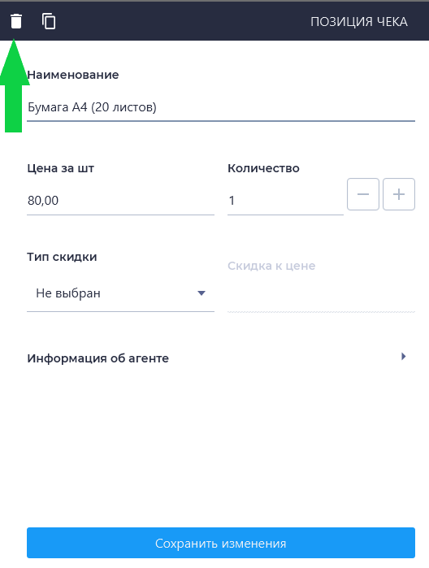
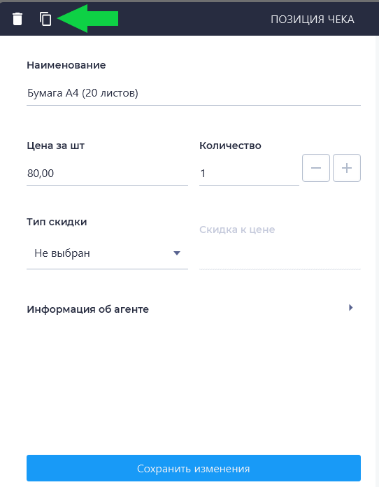
На этом экране также можно изменить количество товара.
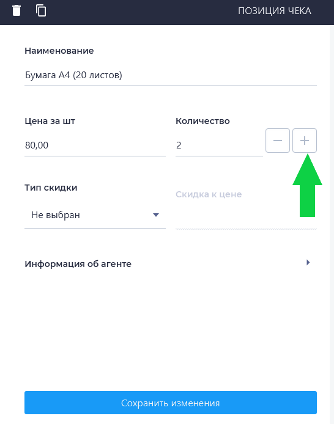
При необходимости можно удалить весь чек до оплаты.
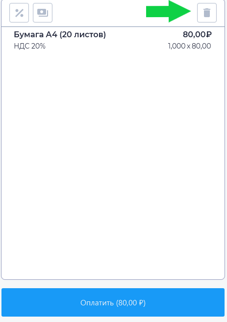
После формирования чека на экране РМК нажмите Оплатить для перехода к оплате.
Экран оплаты¶
На экране оплаты необходимо выбрать способ расчёта в левой части экрана: Наличными, Безналичными, Предоплатой, Постоплатой, Встречным предоставлением.
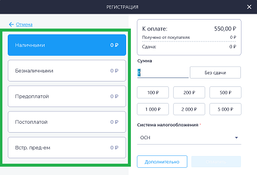
В правой части доступны следующие поля и функции:
- К оплате — отображает сумму чека.
- Сдача — отображает сдачу. Значение в поле отображается только в случае расчёта наличными.
- Сумма — поле для ввода наличных, полученных от покупателя. На основании этого поля рассчитывается сдача.
- Без сдачи — при выборе данной опции значение в поле Сумма автоматически примет значение из поля К оплате.
- 100, 200, 500 — быстрый ввод наличных по купюрам.
- Система налогообложения — в этом окне можно выбрать одно значение, если выбранный торговый объект работает с несколькими СНО.
- Дополнительно — открывает дополнительные поля для ввода информации о клиенте (номер телефона, e-mail, ИНН).
Безналичная оплата на автономном банковском терминале¶
Автономный банковский терминал — POS-терминал, не сопряжённый с кассовым приложением. В данной конфигурации при оплате картой кассир сначала вручную вводит сумму на терминале, после чего покупатель прикладывает карту и происходит оплата.
После оплаты кассир формирует чек в кассовом приложении по безналичному расчёту.
Нажмите Оплатить для печати фискального документа на ККТ.
Безналичная оплата на сопряжённом банковском терминале¶
Сопряжённый банковский терминал — POS-терминал или PIN-pad, работающий под управлением кассового приложения.
Банковский терминал подключается к приложению посредством кабельного USB/RS-232/Ethernet-соединения либо по беспроводному каналу Wi-Fi/Bluetooth.
При оплате картой (безналичный тип оплаты) кассовое приложение самостоятельно связывается с банковским терминалом, передаёт ему сумму к списанию и ожидает ответа. При успешном списании денежных средств приложение самостоятельно печатает кассовый чек на ККТ.
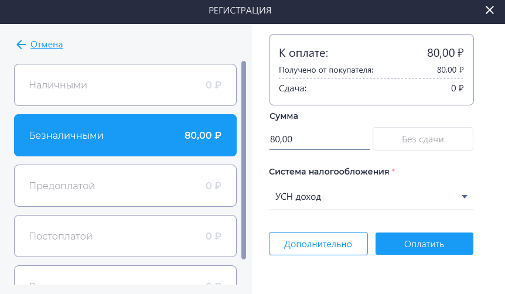
Отправка чека покупателю¶
По требованию 54-ФЗ покупатель вправе попросить электронную копию чека. Для этого кассир при оформлении чека указывает предоставленный покупателем номер телефона или адрес электронной почты. После регистрации на кассе чек передаётся оператору фискальных данных, который отправляет его покупателю по указанному адресу.
(Федеральный закон от 22.05.2003 № 54-ФЗ «О применении контрольно-кассовой техники при осуществлении расчётов в Российской Федерации»).
Отправка чека физическому или юридическому лицу¶
- Для отправки электронного чека покупателю на экране оплаты нажмите Дополнительно.
- Укажите номер телефона или e-mail покупателя. Не стоит указывать оба значения, так как в этом случае электронным адресом будет считаться номер мобильного телефона. Если чек подлежит направлению юридическому лицу, дополнительно введите ИНН получателя.
- Нажмите Сохранить.
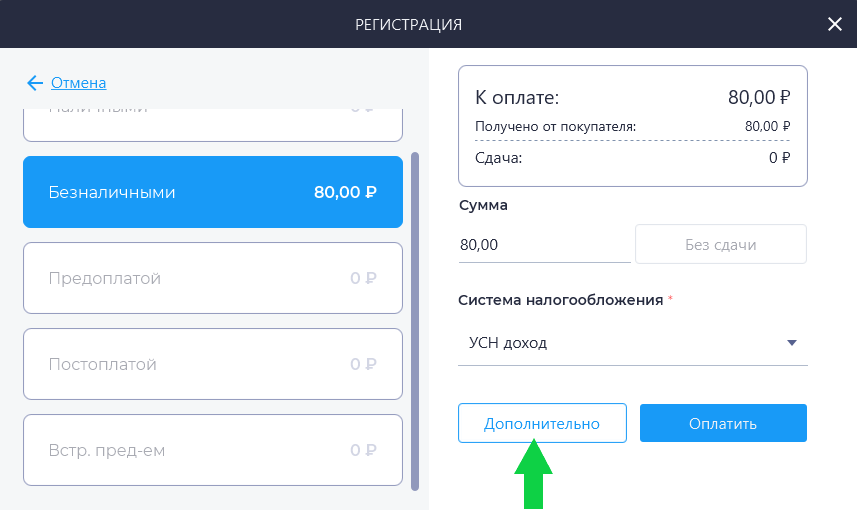
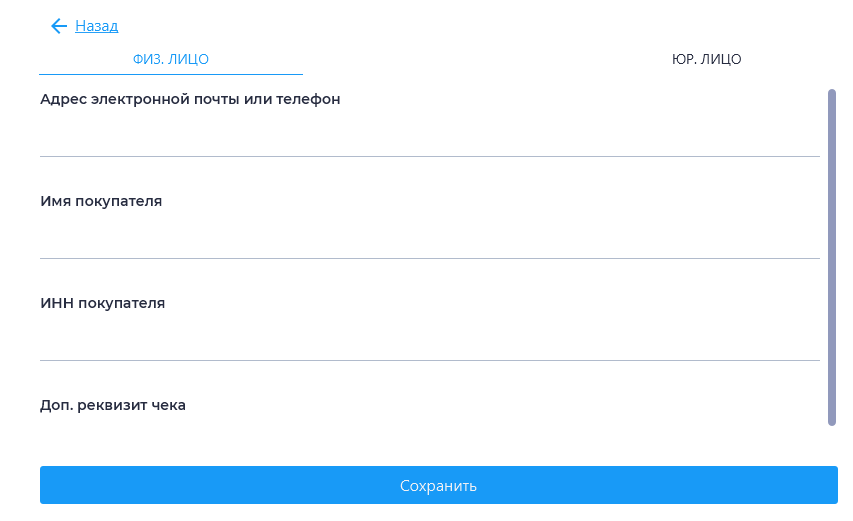
Важно!
Возможность отправить электронную копию чека в СМС на номер клиента у большинства ОФД является платной.
Лояльность¶
Программа лояльности создаётся в Личном Кабинете БИФИТ Касса.
Для применения программы лояльности в приложении необходимо установить плагин Лояльность БИФИТ.
Установка плагина¶
-
В меню выберите раздел О программе.
-
В списке доступных плагинов выберите раздел Расширения. В открывшемся списке выберите Лояльность БИФИТ и нажмите Установить.
-
После установки нажмите Перезагрузить. Приложение загрузится заново.
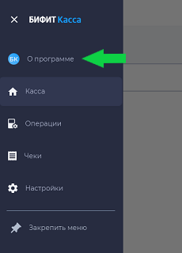
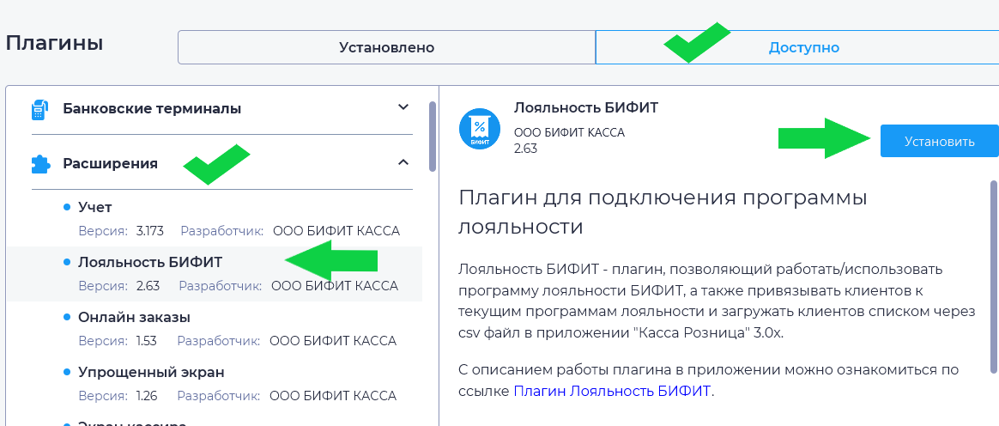
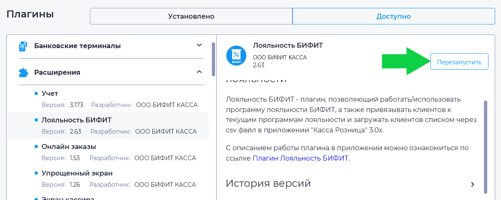
Применение программы лояльности в приложении¶
- В разделе Касса на экране формирования чека нажмите значок процента.
- Во всплывающем окне можно указать размер скидки вручную, а также применить программу лояльности, указав номер карты или номер купона:
- для применения скидки вручную перейдите на вкладку Ручная скидка, укажите размер скидки в процентах и нажмите Сохранить;
- для применения скидки по карте лояльности или купону перейдите на вкладку Лояльность, укажите номер карты лояльности или номер купона и нажмите Добавить, затем Сохранить;
- для одновременного применения ручной скидки и программы лояльности укажите на вкладке Ручная скидка размер скидки, затем добавьте карту лояльности или купон на вкладке Лояльность и нажмите Сохранить. Система автоматически рассчитает размер скидки и применит её к чеку.
- Для удаления добавленной карты лояльности или купона на экране применения скидки нажмите
 .
. - Если в Личном кабинете БИФИТ Касса был добавлен клиент с действующими программами лояльности, то при применении скидки в поле Номер карты или купона можно указать номер телефона клиента и проверить, есть ли у него действующая накопительная программа лояльности.
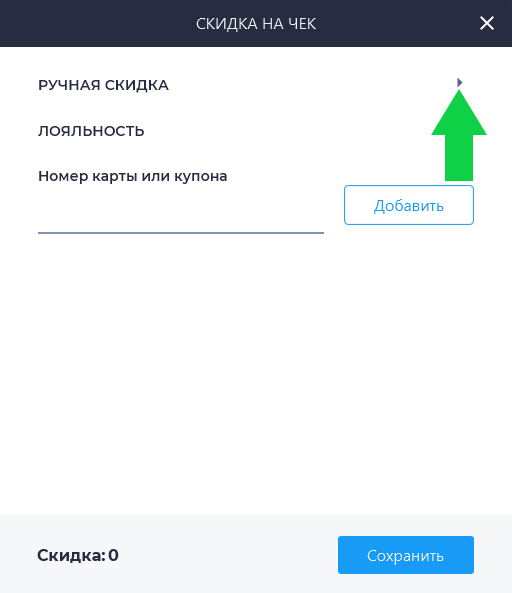
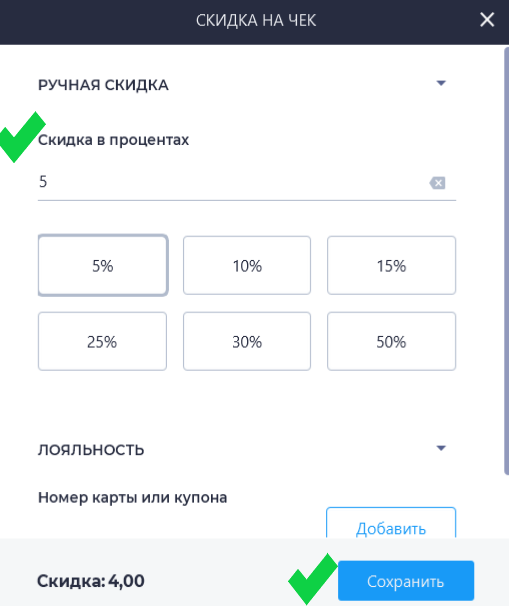
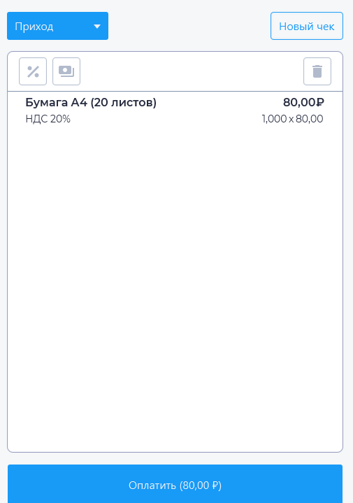
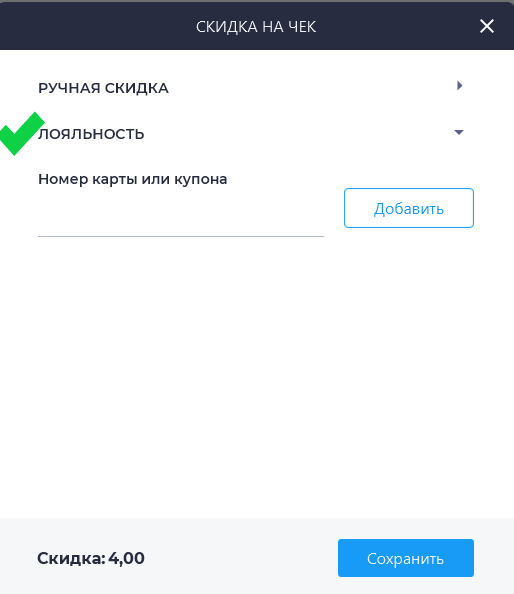
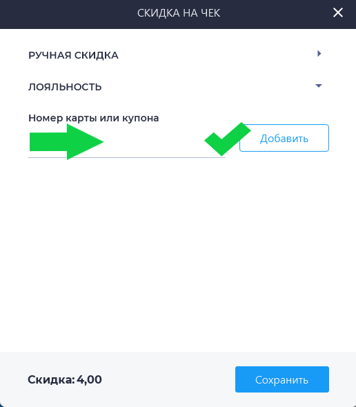
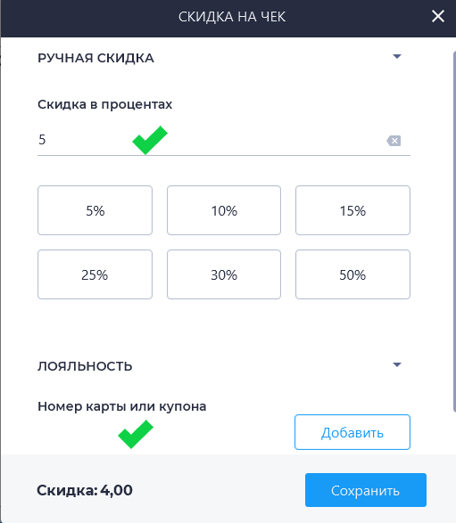
Другие кассовые документы¶
Возврат прихода¶
Возврат прихода оформляется при возврате товаров покупателем.
Для оформления этого документа необходимо перейти в боковое меню в раздел Касса и выбрать операцию Возврат прихода.
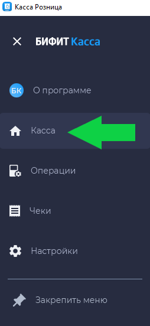
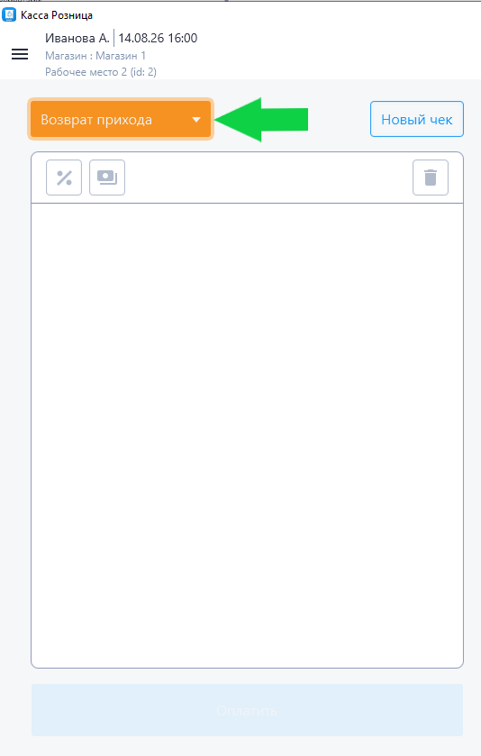
Порядок формирования документа Возврат прихода аналогичен формированию документа Приход.
При возврате товара с перечислением денежных средств на карту клиента необходимо провести документ Возврат прихода из истории чеков.
Документ передаётся в ФНС.
Возврат прихода из истории чеков¶
- Перейдите в раздел Чеки в боковом меню.
- Выберите чек, позицию из которого необходимо вернуть. В верхнем правом углу нажмите меню и выберите Возврат.
Автоматически откроется документ Возврат прихода с уже заполненными позициями.
- Если в исходном документе больше позиций, чем покупатель планирует вернуть, удалите лишние позиции.
- Нажмите Оплатить и перейдите на экран оплаты.
- Укажите тип оплаты и нажмите кнопку Оплатить.
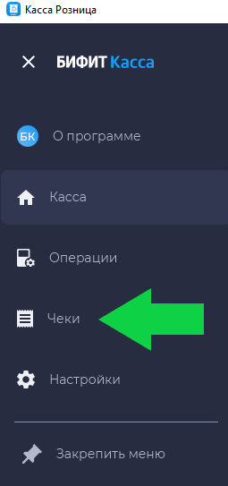
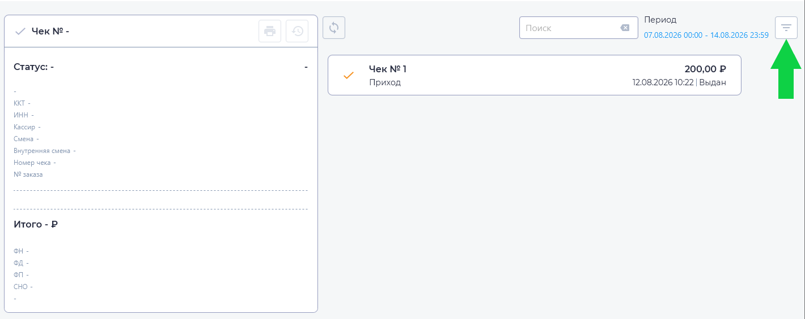
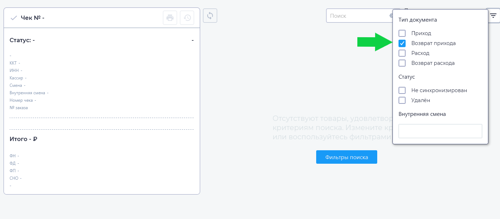
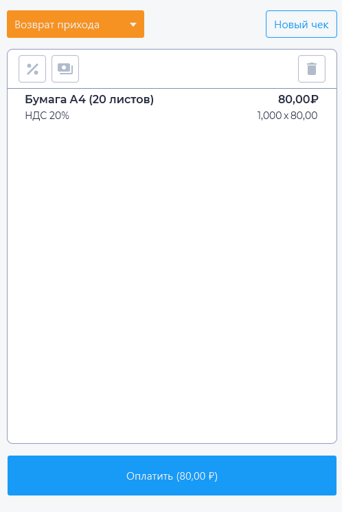
Если подключен банковский терминал, а исходный документ Приход был оплачен банковской картой, произойдёт обращение к банковскому терминалу для списания денежных средств в пользу покупателя.
Если возврат товара произошёл в тот же день, что и продажа, денежные средства вернутся быстрее, чем при возврате спустя несколько дней.
Документ передаётся в ФНС.
Расход¶
Расход оформляется при выплате средств организацией физическому лицу. Порядок оформления документа аналогичен документам Приход и Возврат прихода.
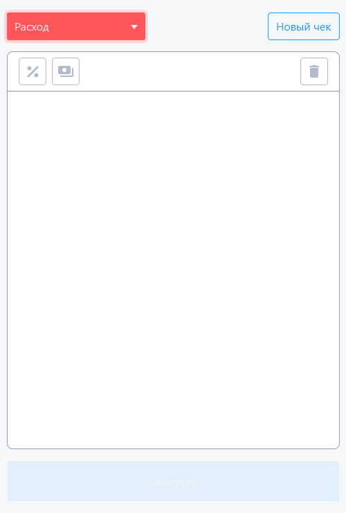
Документ передаётся в ФНС.
Возврат расхода¶
Возврат расхода оформляется организацией при возврате в орагнизацию денежных средств, ранее выданных физическому лицу.
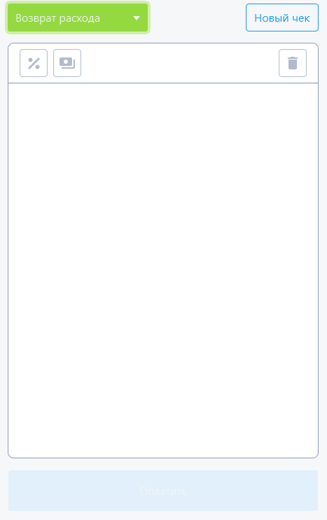
Порядок оформления документа аналогичен документу Возврат прихода.
Документ передаётся в ФНС.
Коррекция¶
Документ коррекции позволяет исправить фискальные документы, которые не были оформлены или оформлены с ошибками.
Чек коррекции можно оформить в любой день.
Документ не передаётся покупателю.
Коррекция по ФФД 1.05¶
При формате фискальных документов ФФД 1.05 коррекция производится без указания товаров из конкретного чека — добавлять позиции не нужно, достаточно указать сумму, по которой производится коррекция.
- В разделе Касса выберите операцию коррекции.
- Выберите тип чека коррекции
- Коррекция прихода
- Коррекция возврата прихода
- Коррекция расхода
- Коррекция возврата расхода
- Нажмите Оплатить.
- На экране коррекции выберите тип коррекции:
- самостоятельная (при проведении коррекции организацией самостоятельно);
- по предписанию (если ФНС выдало предписание).
- Укажите дату проведения коррекции в формате ГГГГ.ММ.ДД (дата документа предписания либо дата служебной записки, если коррекция сделана самостоятельно).
- В поле Номер предписания налогового органа укажите:
- номер предписания;
- номер чека (ФД).
- Укажите сумму.
- В поле Суммы НДС укажите размер НДС для чека коррекции.
- Проверьте корректность указанных данных и нажмите Далее.
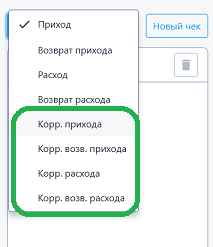
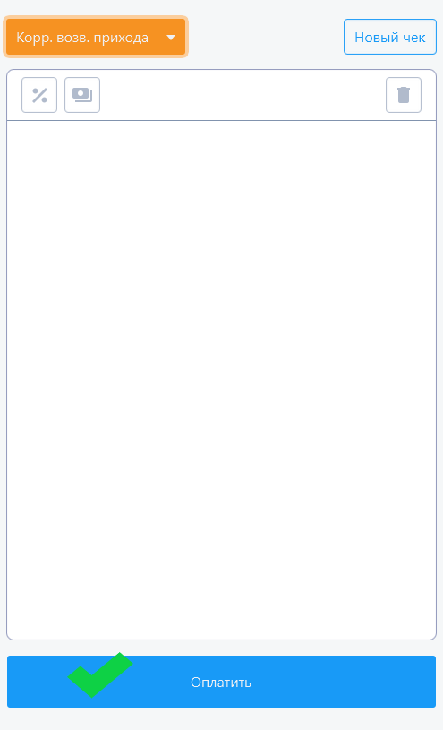

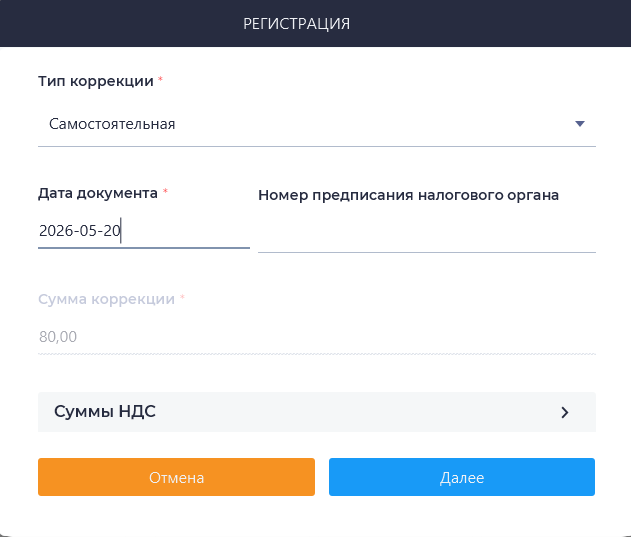
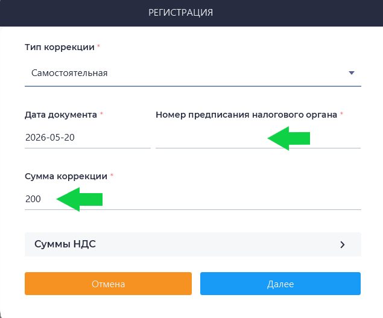
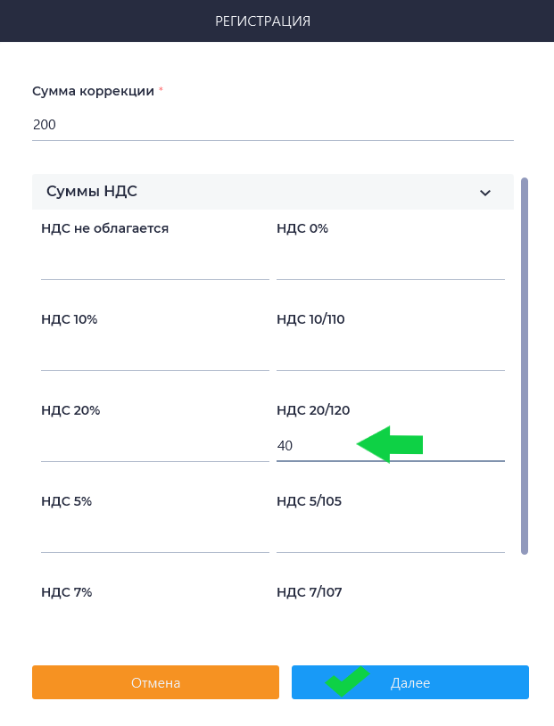
Откроется экран оплаты. При операции коррекции экран оплаты аналогичен экрану оплаты при операции Приход.
После формирования оплаты нажмите Оплатить. На кассе будет распечатан чек коррекции.
Документ передаётся в ФНС.
Коррекция по ФФД 1.2¶
- В разделе Касса выберите операцию коррекции.
- Выберите тип чека коррекции
- Коррекция прихода
- Коррекция возврата прихода
- Коррекция расхода
-
Коррекция возврата расхода
-
Добавьте в чек товары, по которым необходимо провести коррекцию.
- Нажмите Оплатить.
- На экране коррекции выберите тип коррекции:
- самостоятельная (при проведении коррекции организацией самостоятельно);
- по предписанию (если ФНС выдало предписание).
- Укажите дату проведения коррекции в формате ГГГГ.ММ.ДД (дата документа предписания либо дата служебной записки, если коррекция сделана самостоятельно).
- Если коррекция производится по предписанию, в поле Номер предписания налогового органа укажите:
- номер предписания;
- номер чека (ФД).
- Проверьте корректность указанных данных и нажмите Далее.
Откроется экран оплаты. При операции коррекции экран оплаты аналогичен экрану оплаты при операции Приход.
После формирования оплаты нажмите Оплатить. На кассе будет распечатан чек коррекции.
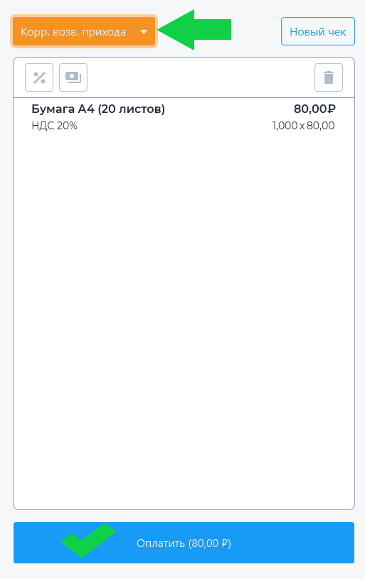
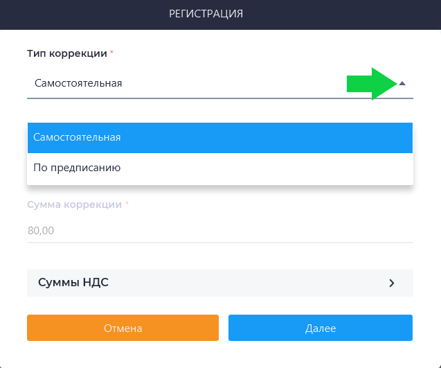
Документ передаётся в ФНС.
Внесение / Выплата¶
Документ не является фискальным, не передаётся покупателю и предназначен для изменения остатка наличных денежных средств в ККТ.
- Чтобы произвести внесение или выплату, в боковом меню выберите раздел Операции.
- Нажмите на вкладку Внесение/Выплата.
- Выберите тип операции.
- Укажите основание, сумму, нажмите Внести или Выплатить в зависимости от операции.
Документ не передаётся в ФНС.
Отчёты¶
Для печати отчётов в боковом меню выберите раздел Операции и перейдите в пункт Отчёты.
Открытие и закрытие смены¶
Кассовый аппарат работает посменно. Длина смены не может превышать 24 часа. При выходе на смену кассир печатает отчёт Открытие смены и приступает к регистрации чеков. По завершении смены печатается отчёт Закрытие смены. Если смена превысит 24 часа, работа на кассовом аппарате блокируется, пока не будет распечатан отчёт о закрытии смены.
Открытие смены¶
Документ печатается на чековой ленте с указанием даты, времени открытия смены, имени кассира. В зависимости от модели ККТ отчёт об открытии смены печатается автоматически при печати первого чека.
Закрытие смены¶
На чековой ленте печатается документ, завершающий кассовую смену. В отчёт входит информация о дате и времени закрытия смены, ФИО кассира. В некоторых ККТ отчёт о закрытии смены совмещён с X-отчётом. На кассе распечатается отчёт о закрытии смены.
Важно!
Фискальные документы отчётов открытия и закрытия смены не хранятся в базе БИФИТ Касса. Они доступны в личном кабинете ОФД.
X-отчёт¶
Печатает на чековой ленте показатели выручки за текущую смену. Среди них: - величина выручки; - сумма ДС, принятых безналичными денежными средствами; - сумма ДС, принятых наличными денежными средствами; - количество фискальных документов; - типы фискальных документов; - количество фискальных документов, непереданных в ОФД.
Проверка связи с ОФД¶
Проверка связи с ОФД выполняется двумя способами в зависимости от кассового аппарата:
- печать отчёта на чековой ленте;
- отображение информации на экране смартфона или планшета.
В обоих случаях отображается состояние соединения и количество непереданных документов (если они есть).